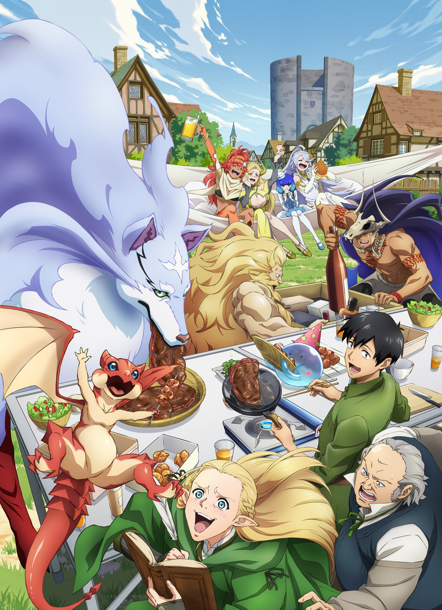
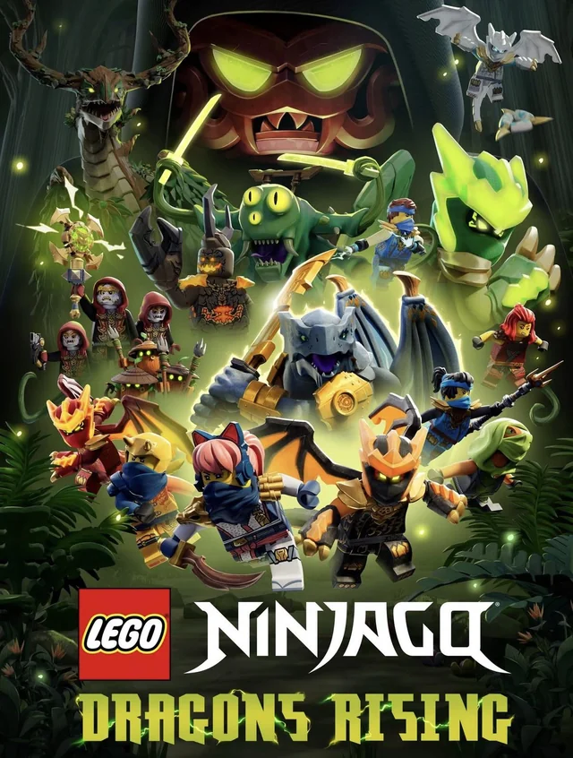

渡名喜 千聖
01 PROFILE
- 所属学科: ITスペシャリスト科情報セキュリティコース
- 生年月日: 2007/9/24
- 血液型: O型
- 性格: 明るい、面白い
02 HOBBY
- 音楽を聴く事（K-POP、洋楽、EDMなど）
- 歌う事
- ダンスをする事
03 ANIMATION
- とんでもスキルで異世界放浪メシ

- レゴニンジャゴー

04 EFFORT
- プログラミングの用語を覚える事
- セキュリティに関する事を意識
05 LAST WORDS
授業で追いつけられるよう頑張ります。宜しくお願いします。